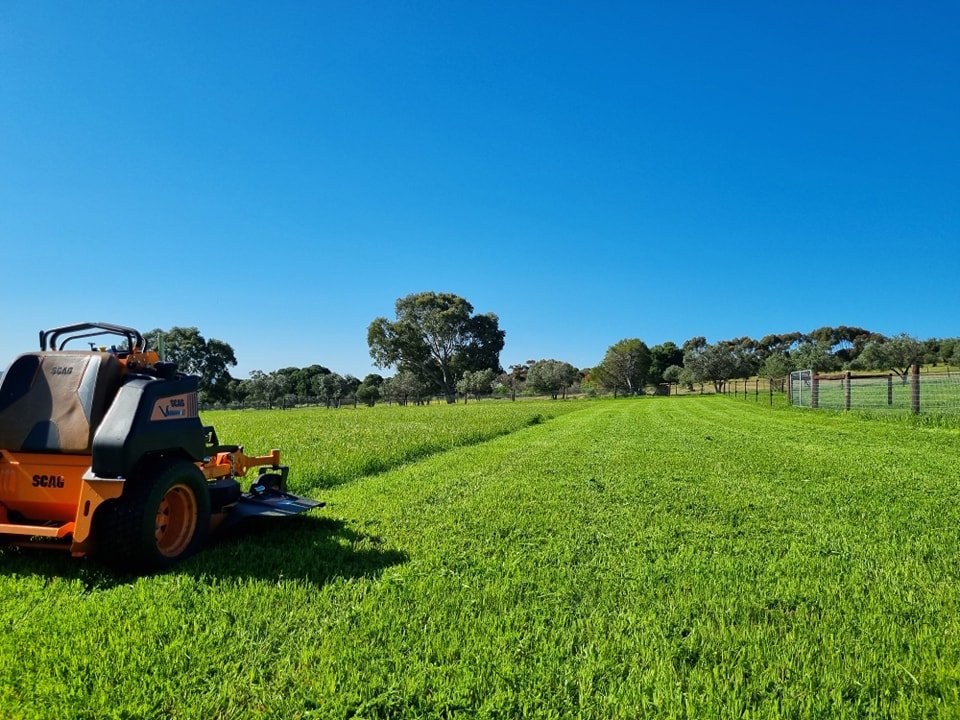

What Is Professional Acreage Mowing?
Acreage mowing on the Fleurieu Peninsula is a specialist service designed for rural, lifestyle, and hobby farm properties that standard residential lawn mowers simply aren't built for. It covers the mowing, slashing, and clearing of large blocks — from 1-acre suburban lifestyle properties through to expansive rural landholdings of 20+ acres.
CWS Lawn and Garden Care provides professional acreage mowing across the Fleurieu Peninsula using commercial-grade ride-on mowers and slashers suited to uneven terrain, long grass, native vegetation, and fire-risk management requirements common in our region. We service properties in Willunga, McLaren Vale, McLaren Flat, Mount Compass, Kuitpo, Whites Valley, Encounter Bay, Hayborough, and surrounding rural areas.
Whether you need a seasonal block slashing before summer, regular acreage mowing to maintain a lifestyle property, or a first-cut clear of an overgrown rural block, CWS arrives with the right equipment and the local knowledge to get the job done — safely and clearly, every time.

Properties We Mow Across the Fleurieu Peninsula
From compact lifestyle blocks to large rural landholdings, CWS handles acreage mowing for all property types across the Fleurieu Peninsula.
Signs Your Fleurieu Peninsula Property Needs Acreage Mowing
Acreage properties on the Fleurieu Peninsula have specific needs — here's when to call CWS.
Grass Over 30cm
Long grass on rural Fleurieu properties becomes a fire hazard fast, particularly in summer. CWS can slash overgrown paddocks and blocks to compliant levels ahead of the fire danger season.
Approaching Summer
Fire season preparation is one of the most common reasons Fleurieu Peninsula landowners book acreage mowing. Clearing long grass before October reduces risk and meets council fire management requirements.
Overgrown Fence Lines
Vegetation growing into and over fence lines on rural properties damages fencing infrastructure and creates pest harbourage. Regular acreage mowing keeps fence lines clear and accessible for maintenance.
Property Going to Market
Rural and lifestyle properties on the Fleurieu Peninsula present far better at sale when acreage areas are mowed, slashed, and clear. A one-off acreage mow before listing dramatically improves first impressions.
Stock Removed From Paddocks
When animals are removed from paddocks, grass can grow rapidly without grazing pressure. CWS provides acreage mowing to manage pasture growth and keep paddocks in usable condition between grazing rotations.
No Equipment or Capacity
Large acreage mowing requires commercial-grade ride-on equipment most residential owners don't have. CWS arrives fully equipped — no machine hire, no risk of personal equipment not being up to the job.
Our Acreage Mowing Process on the Fleurieu Peninsula
Four clear steps from your first enquiry to a professionally mowed and slashed rural property.
Free Quote Request
Call 0402 559 065 or complete the quote form. Tell us your property location, estimated block size, and what needs clearing — no obligation required.
On-Site Property Assessment
We visit your property across the Fleurieu Peninsula to assess block size, terrain, grass height, access points, and any obstacles — then provide a clear fixed price.
Professional Mow & Slash
We carry out the acreage mowing using commercial-grade equipment — slashing paddocks, clearing fence lines, and managing vegetation to your specified height and outcome.
Scheduled Maintenance
After the initial mow, we can schedule regular acreage mowing visits — seasonal, monthly, or fortnightly — to keep your rural Fleurieu Peninsula property maintained year-round.
Why Choose CWS for Acreage Mowing on the Fleurieu Peninsula
Commercial-Grade Equipment
We operate ride-on mowers and commercial slashers specifically suited to large blocks, uneven rural terrain, and long-grass conditions — far beyond what a standard residential mower can handle across Fleurieu Peninsula acreage.
Local Knowledge of Rural Fleurieu
We understand the terrain, soil conditions, and seasonal fire management requirements specific to the Fleurieu Peninsula — from the clay-loam paddocks around Mount Compass to the drier coastal blocks near Sellicks Beach and Aldinga.
Fire Season Compliance
CWS helps Fleurieu Peninsula landowners meet their annual fire management obligations. We slash to council-compliant heights before the fire danger season, giving you peace of mind heading into summer on your rural property.
Fully Insured on Every Job
All acreage mowing across the Fleurieu Peninsula is carried out with full public liability insurance. Your property, your fencing, and our team are covered — giving you complete confidence on every visit.
CWS Acreage Mowing at a Glance
Recent Acreage Mowing Projects
From sprawling hobby farms in Mount Compass to large rural blocks in Willunga, here is a sample of our recent acreage mowing and block slashing work across the Fleurieu Peninsula.
Acreage Mowing Across the Entire Fleurieu Peninsula
CWS Lawn and Garden Care covers the full length of the Fleurieu Peninsula for acreage mowing and block slashing. Based in Willunga, we travel to rural properties from Seaford in the north through to Encounter Bay and Hayborough in the south, and inland to Mount Compass, Kuitpo, and Whites Valley.
Our acreage mowing service is tailored to the distinct landscape zones of the Fleurieu Peninsula — the rolling hills and clay soils of the McLaren Vale wine region, the drier coastal scrub bordering Sellicks Beach and Port Willunga, and the steeper rural terrain around Mount Compass and Kuitpo where access and equipment choice matter most.
Unsure if we reach your property? Call us on 0402 559 065 — we regularly travel further than most expect.
Frequently Asked Questions About Acreage Mowing
Answers to the questions we hear most from rural and lifestyle property owners across the Fleurieu Peninsula.
What is acreage mowing and how is it different from regular lawn mowing? +
Acreage mowing uses commercial-grade ride-on mowers and slashers to manage large rural blocks, paddocks, and lifestyle properties that standard residential mowers can't handle. Unlike regular lawn mowing, acreage mowing on the Fleurieu Peninsula covers uneven terrain, long grass, and large land areas — typically from 1 acre to 50+ acres — often for fire management, land maintenance, or property presentation purposes.
How much does acreage mowing cost on the Fleurieu Peninsula? +
The cost of acreage mowing depends on the size of your block, the height and density of the grass/vegetation, and the terrain. We provide free, no-obligation on-site quotes across the Fleurieu Peninsula to give you an accurate, fixed price before any work begins.
How often should rural properties be mowed? +
This depends on your goals. For fire safety, a major slash before summer is essential. For lifestyle properties, many owners opt for monthly or fortnightly mowing during the spring growing season, dropping back to seasonal maintenance in summer and winter.
Do you help with fire season compliance slashing? +
Yes. Preparing rural properties for the fire danger season is a core part of our acreage mowing service. We slash long grass and clear overgrown areas to help you meet local council fire management requirements.
What size properties do you mow — is there a minimum block size? +
Our acreage mowing service is designed for properties of 1 acre and above. We regularly handle everything from 1-acre suburban lifestyle blocks to 50+ acre rural landholdings.
Can you access difficult rural terrain and steep blocks? +
Our commercial-grade ride-on equipment is built for uneven rural terrain. During our free on-site assessment, we will evaluate the slopes, access points, and terrain to ensure we can safely and effectively mow your property.